boton = Button(root, text="Hola Mundo!!!", command=funcion, width=20, height=10, anchor=E)

Algo muy buscado en Python son las guías sobre interfaces gráficas ya sea PyGTK, PyQT, WxPython o TkInter entre las mas conocidas teniendo cada una sus ventajas y desventajas, así como cada una tiene facilidades y complicaciones en su uso y aplicación. En esta oportunidad le daré un espacio a TkInter como guía complementaria a la hecha por Sebastardo en http://www.codigopython.com.ar/?p=139, intentare ser lo mas lo mas claro posible sin pasarme por alto los pequeños detalles en lo que compone la creación de una interfaz gráfica en Python con el toolkit TkInter.
[FIXME]
Dejo algunas observaciones sobre el tutorial, a lo largo del tutorial es posible que haga alusión a funciones o características de distribuciones GNU/Linux ya que es el sistema operativo que estoy utilizando durante el desarrollo de esta guía, aunque esto no influye en el objetivo de la guía ya que Python es multiplataforma al igual que TkInter. Para los que deseen colaborar con esta guía así como en su contenido, pueden hacerlo registrándose en la Wiki
Lo primero que debemos hacer al igual que con otros módulos es que debemos importarlo para poder comenzar a utilizarlo, y al igual que con otros módulos tenemos dos formas de hacerlo
La primera y mas utilizada:
from Tkinter import *
Y la segunda y menos usada:
import Tkinter
La diferencia entre usar la primera y segunda forma es la misma con la que nos podemos topar a la hora de importar un modulo en Python, para verlo si volvemos al articulo "Pausa entre comandos y acciones" mostré esta diferencia utilizando al modulo 'time' y para hacerlo use el siguiente ejemplo:
import time time.sleep(10)
from time import sleep sleep(10)
Usando la forma "import Tkinter" cada vez que utilicemos una función del este modulo tendremos que anteponer la palabra 'Tkinter', en cambio usando la segunda forma "from Tkinter import *" simplemente deberemos usar el nombre de la función sin el nombre del modulo.
Por ahora a modo de tutorial utilizaremos la primer forma pero esto queda a su desicion, ahora si retomemos la guía.
Una observación que haré antes de continuar es no debemos pasa por alto la posibilidad de que el usuario no tenga instalado las librerías de TkInter y en consecuencia nuestra aplicación no podrá funcionar, lo mejor en este caso como en muchos otros es anticiparnos a los posibles errores que puedan ir surgiendo y manejar las excepciones de la siguiente forma:
try:
from Tkinter import *
except ImportError:
raise ImportError,"Se requiere el modulo Tkinter"
De esta forma en caso de que el potencial usuario de nuestra preciada aplicación pueda saber cual es motivo (en el caso de que no tenga instalado Tkinter) por el cual no pudo ejecutarla.
Una vez importado el modulo 'Tkinter' correctamente podemos utilizarlo para crear nuestra primera ventana de la siguiente forma:
root = Tk() root.mainloop()
Esas dos lineas son fundamentales, ya que dentro de ellas ira gran parte del contenido así como la interfaz como pueden ser botones y menús, etc.. En la primera linea se crea un identificador que sera el que utilizaremos para referirnos a la ventana, en este caso lo llamamos 'root' y es una de las funciones mas importantes de Tkinter. Siempre que iniciamos un identificador en este caso lo llamamos 'root' debemos cerrarlo y todo lo contenido entre estas lineas serán parte del código de nuestra interfaz.[FIXME]
Con esto ya tendremos una ventana vacía que nos servirá para comenzar a trabajar, a partir de ahora iré ampliando esta guía mostrando los distintos widgets con los que contamos en TkInter y luego para finalizar crearemos un ejemplo sencillo para unir lo se vio a lo largo de esta guía.
En esta sección de la guía no nos centraremos en el posicionamiento y diseño de los elementos que compondrán nuestra interfaz gráfica lo dejaremos para la siguiente sección "Gestión del diseño" en donde se vera mas detenidamente este asunto.
Para comenzar a llenar esa vacía ventana que acabamos de crear vamos a nombrar a las etiquetas o mas conocidas como 'label' por su nombre en ingles, las podemos encontrar desde interfaces gráficas hasta en formularios en HTML y son sumamente útiles en la construcción de interfaces y formularios, al igual que cuando creamos nuestra ventana vacía declarándola de la siguiente forma "root = Tk()" tendremos que hacerlo con nuestra etiqueta, para esto necesitamos escoger un nombre en mi caso escogeré "etiqueta" para declararla y deberemos llamar al widget "Label" en vez de la función "Tk" como habíamos hechos anteriormente, como para orientarnos con lo ya visto quedando por ahora algo así:
etiqueta = Label()
Una vez creada la estructura básica de la etiqueta tendremos que llenar esa paréntesis vacío, primero tendremos que indicar a donde pertenece ese 'label' indicando el identificador de la ventana que en nuestro caso es 'root', separado por una coma escribiremos lo siguiente text= en donde seguido del signo igual incluiremos el texto que deseamos que incluya la etiqueta la cual puede ser un texto (que tendremos que encerrar entre comillas al igual que cuando usamos la sentencia print) o una variable que contenga al texto. Para verlo un poco mas claro juntemos todo en dos ejemplos uno donde muestre un texto fijo que le indiquemos a la etiqueta y otro usando una variable
etiqueta = Label(root, text="Codigo Python")
import getpass texto = "Bienvenido %s a Codigo Python" % getpass.getuser() etiqueta_2 = Label(root, text=texto)
Expliquemos los dos ejemplos, en el primero usamos un texto fijo no dinámico para utilizar como valor de la etiqueta en cambio en el segundo estamos usando una variable en donde su valor varia dependiendo de la salida que tenga la función 'getpass.getuser()' que obtiene el nombre de usuario que tengamos en nuestra PC, como podemos observar su funcionamiento no varia mucho de lo que nos tiene acostumbrados Python, así que si manejarnos con Tkinter es solamente aprendernos un par de nombres de sus widgets como para poder empezar a utilizarlo.
Pero (siempre hay un pero) antes de poder ejecutar este ejemplo en nuestra consola tendremos que declarar este widget en nuestra ventana dándole una ubicación en la misma sino hacemos esto nuestra etiqueta simplemente no aparecerá en nuestra ventana, para hacerlo tenemos dos formas (Esto se vera mas detenidamente mas adelante) una es usando 'pack' y la otra ' grid'. Como esto se vera mas adelante haré una breve síntesis de los dos:
Como en este ejemplo solo colocaremos una etiqueta no es necesario recurrir al uso de 'grid' para posicionarlo, así que usaremos 'pack' en su lugar. Pero lo mas importante es saber como se declara esta etiqueta en nuestra ventana y poder ver nuestro primer widget en funcionamiento, para lograr esto deberemos usar la siguiente forma:
etiqueta.pack()
Como vemos es muy simple solo debemos usar el nombre que utilizamos para declarar nuestra etiqueta seguida de la forma que vayamos a utilizar para posicionarla, pero para los que no desean esperar a leer la siguiente sección para ver como se utiliza 'grid' les dejo la misma etiqueta pero posicionándola con 'grid' en lugar de usar 'pack' como ya lo habíamos visto:
etiqueta.grid(row=1, column=1)
Como se puede observar esta otra forma debimos indicarle dos parámetros que sirven para especificar la posición del widget, en este caso nuestra etiqueta. El primer parámetro es 'row' que se traduce como fila al español y el segundo es 'column' o columna en español con ellos podemos indicar en que columna y fila deberá colocarse el widget, aunque por ahora no profundizaremos entrando en detalles en la forma que trabaja cada uno ni todos los parámetros que acepta cada una.
Si ahora escribiéramos todo lo que vimos en nuestra consola tendríamos que ver nuestra primera etiqueta en funcionamiento, contenido dentro de una ventana, quedando todo el código como el siguiente:
>>> from Tkinter import * >>> root = Tk() >>> etiqueta = Label(root, text="Codigo Python") >>> etiqueta.pack() >>> root.mainloop()
Y así es como quedara nuestro ejemplo terminado:
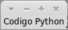
Habiendo ya escrito esas lineas se da por finalizada la muestra de este primer widget y podemos seguir con la guía.
Los botones pueden contener texto o imágenes y se les puede asociar funciones o métodos, que al hacer clic sobre ellos Tkinter se encargara de llamar automáticamente a ese método o función y se ejecutara el código Python contenido dentro de ellos.
Un detalle es que solo puede utilizarse un tipo de fuente, pero ese texto puede ocupar varias lineas en caso de ser necesario. Además se puede subrayar el texto, un carácter o letra en particular, algo que es muy común cuando se desea decirle al usuario sobre la existencia de un atajo con el teclado.
Antes de crear a ese botón debemos declarar la función a la cual se llamara, porque como se imaginaran no podemos decirle al botón que ejecute una función que aun no existe, por eso vamos a escribir un par de lineas y crearemos una función simple como para verificar que dicho botón funciona correctamente.
def función():
print "Excelente"
Con esas dos lineas nos va a servir para demostrar su funcionamiento, ahora si vamos con el botón.
A continuación les muestro el código con el cual vamos a trabajar:
from Tkinter import *
def función():
print "Excelente"
root = Tk()
botón = Button(root, text="Que te parece la guía?", command=función)
botón.pack()
root.mainloop()
En el se observa la ya conocida importación del modulo Tkinter, la función que ya habíamos declarado y la creación del botón. Como se puede ver la creación de un botón básico es muy similar al de una etiqueta pero se incluye un parámetro mas que nos dará la posibilidad de especificar dentro de el la función que utilizaremos; el parámetro mencionado es 'command' y en ella podemos llamar a funciones o métodos, en este caso llamamos a la función 'función' que va a imprimir en la consola la palabra 'Excelente'.
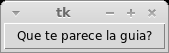
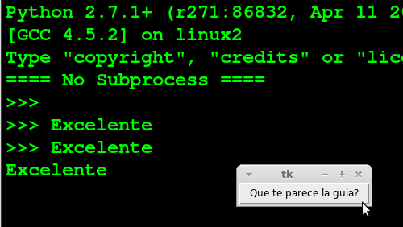
Este widget nos permite tanto mostrarle información al usuario como también obtener información de su parte, dotando a nuestra ventana de un widget
Para escribir varias lineas de texto utilice el widget 'Text'
== [Frame] =
Para mas informacion sobre los colores visite la seccion "Colores" que se ve en "Gestion del diseño"
anchor
Tkinter nos permite controlar de que forma se va a posicionar un texto o imagen con respecto al widget en el que se encuentra. La opcion por defecto es 'CENTER' que muestra el elemento centrado.
| NW | N | NE |
| W | CENTER | E |
| SW | S | SE |
boton = Button(root, text="Hola Mundo!!!", command=funcion, width=20, height=10, anchor=NW)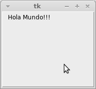
boton = Button(root, text="Hola Mundo!!!", command=funcion, width=20, height=10, anchor=N)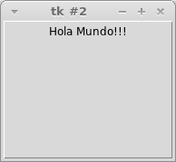
boton = Button(root, text="Hola Mundo!!!", command=funcion, width=20, height=10, anchor=NE)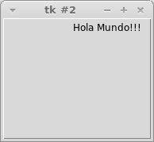
boton = Button(root, text="Hola Mundo!!!", command=funcion, width=20, height=10, anchor=W)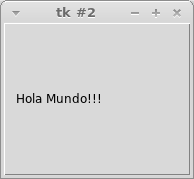
boton = Button(root, text="Hola Mundo!!!", command=funcion, width=20, height=10, anchor=CENTER)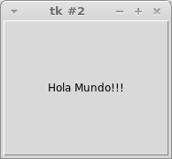
boton = Button(root, text="Hola Mundo!!!", command=funcion, width=20, height=10, anchor=E)
boton = Button(root, text="Hola Mundo!!!", command=funcion, width=20, height=10, anchor=SW)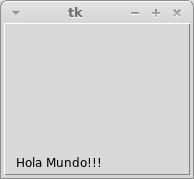
boton = Button(root, text="Hola Mundo!!!", command=funcion, width=20, height=10, anchor=S)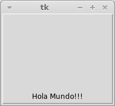
boton = Button(root, text="Hola Mundo!!!", command=funcion, width=20, height=10, anchor=SE)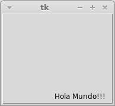
activebackground
Con esta opcion podemos indicar que color se debera utilizar cuando el cursor del mouse se posicione sobre el widget.
boton = Button(root, text="Hola Mundo!!!", command=funcion, activebackground="#F50743")
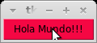
activeforeground
Al igual que pasa con 'activebackground' con esta otra opcion podemos especificar el color en este caso de la fuente del widget cuando se posiciona el cursor sobre este.
boton = Button(root, text="Hola Mundo!!!", command=funcion, activeforeground="#F50743")
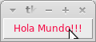
background (bg)
Sirve para indicar el color de fondo que tendra en area del widget cuando este se encuentre inactivo. Tambien se puede utilizar su abreviatura 'bg' como podemos ver en el segundo ejemplo.
boton = Button(root, text="Hola Mundo!!!", command=funcion, background="#38EB5C")
boton = Button(root, text="Hola Mundo!!!", command=funcion, bg="#38EB5C")
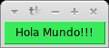
bitmap
borderwidth (bd)
Nos da la posibilidad de especificar el ancho del borde del elemento con el que estemos trabajando, Tkinter nos permite especificar el valor en varias unidades de medida (centimetros, pulgadas, milimetros y puntos) las cuales seran vistas mas adelante en la guia. Si no se utiliza junto con la opcion 'relief' visualmente es similar a utilizar las opciones 'heigth' y 'width' como se puede observar en el ejemplo. El valor por defecto es de 2 pixeles.
etiqueta = Label(root, text="Hola Mundo!!!", borderwidth=15)
etiqueta = Label(root, text="Hola Mundo!!!", bd=15)
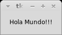
command
Como ya lo mencionamos cuando vimos al widget Button este permite indicar la funcion o metodo que queremos que se llame cuando se preciona por ejemplo un boton, pero esta opcion tambien funciona con otros widgets de Tkinter cumpliendo la misma funcion.
def funcion():
print "Excelente"
boton = Button(root, text="Que te parece la guia?", command=funcion)
cursor
Nos da la posiblidad de indicar que cursor queremos que se muestre cuando el mouse se posiciona sobre la etiqueta. En el siguiente enlace podremos encontrar una lista con los cursores disponibles en Tkinter http://www.tcl.tk/man/tcl8.5/TkCmd/cursors.htm. El valor 'none' consigue eliminar el cursor cuando se pasa el cursor sobre el widget.
etiqueta = Label(root, text="Que te parece la guia?", cursor="cross")
default
font
foreground (fg)
Si deseamos cambiar el color de las letras de nuestro texto cuando el widget se encuentra inactivo tendremos que utilizar esta opcion, que trabaja de forma similar al ya visto 'background'. En este se tambien se puede utilizar su abreviatura 'fg' como podemos ver en el segundo ejemplo
boton = Button(root, text="Hola Mundo!!!", command=funcion, foreground="#38EB5C")
boton = Button(root, text="Hola Mundo!!!", command=funcion, fg="#38EB5C")
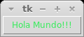
height
Permite indicar la altura a la que se posicionara nuestro widget en lineas no en pixeles. Si esta opcion no se especifica el tamaño del elemento se ajustara dependiendo el contenido del mismo
etiqueta = Label(root, text="Hola Mundo!!!", height=10)
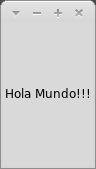
image
justify
etiqueta = Label(root, text="Hola\n Mundo!!!", justify=RIGHT)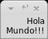
etiqueta = Label(root, text="Hola\n Mundo!!!", justify=CENTER)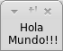
etiqueta = Label(root, text="Hola\n Mundo!!!", justify=LEFT)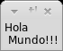
relief
Especifica la apariencia de un borde decorativo alrededor del widget que simula un efecto 3D sobre el elemento, el ancho de esta sombra depende del valor que se especifique con el atributo 'borderwidth', los posibles valores son SUNKEN, RAISED, GROOVE, RIDGE, FLAT. El valor por defecto es FLAT que no coloca ningun borde sobre el widget.
Descripcion de los cuatro estilos:
Ejemplos:
etiqueta = Label(root, text="Hola Mundo!!!", relief=SUNKEN, borderwidth=5)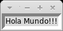
etiqueta = Label(root, text="Hola Mundo!!!", relief=RAISED, borderwidth=5)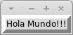
etiqueta = Label(root, text="Hola Mundo!!!", relief=GROOVE, borderwidth=5)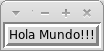
etiqueta = Label(root, text="Hola Mundo!!!", relief=RIDGE, borderwidth=5)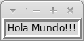
etiqueta = Label(root, text="Hola Mundo!!!", relief=FLAT, borderwidth=5)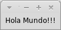
text
Este es un elemento muy importante para los widgets como Label o Button entre otros, esta opcion nos da la posibilidad de incluir un texto dentro del widget, este texto puede contener saltos de lineas en caso de ser necesario y tambien se puede utilizar una variable para indicar la cadena de texto a usar. Si se utiliza una imagen este elemento es ignorado por Tkinter.
Ejemplo simple:
etiqueta = Label(root, text="Codigo Python")
Ejemplo con una variable:
texto = "Codigo Python" etiqueta = Label(root, text=texto)
Ejemplo con salto de linea (recuerden que deben usar el caracter \n para el salto de linea):
etiqueta = Label(root, text="Hola \n a todos")
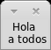
Ejemplo con tabulacion (recuerden que deben usar el caracter \t para la tabulacion):
etiqueta = Label(root, text="Hola \t a todos")
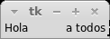
textvariable
underline
Permite subrayar una letra de nuestra etiqueta, algo que es muy util para por ejemplo destacar un atajo con el teclado. La forma en que se utiliza es indicandole el indice de la cadena de texto que conforma nuestra etiqueta comenzando desde cero. El valor por defecto de esta opcion es -1 lo que logra que no se subraye ninguna letra
Ejemplo con una etiqueta
etiqueta = Label(root, text="Hola Mundo!!!", underline=3)
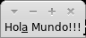
Ejemplo con un boton
boton = Button(root, text="Imprimir Hola Mundo!!!", command=funcion, underline=3)
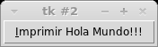
width
Esta opcion nos permite indicar en ancho del elemento con el que estamos trabajando midiendolo en caracteres no en pixeles si se trata de texto, si en cambio estamos trabajando con imagenes si deberemos medirlo en pixeles, si se le da un valor negativo este servira para indicar el ancho minimo del widget. Si esta opcion no se especifica el tamaño del elemento se ajustara dependiendo el contenido del mismo.
etiqueta = Label(root, text="Hola Mundo!!!", width=30)
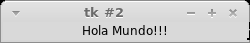
wraplength
Los siguiente metodos nos daran la posibilidad de personalizar al maximo nuestra apliacion y cada una de sus ventanas
Permite minimizar la ventana que le indiquemos, esto es util para por ejemplo minimizar una ventana padre cuando se habre una ventana hija. Lo mejor sera verlo con unos ejemplos.
from Tkinter import * root = Tk() boton = Button(root, text="Minimizar", command=root.iconify) boton.pack root.mainloop()
from Tkinter import *
def funcion():
otra_ventana = Toplevel(root)
root.iconify()
root = Tk()
boton = Button(root, text="Abrir otra ventana", command=funcion)
boton.pack()
root.mainloop()
Al contrario de como vimos en 'iconify' que podiamos minimizar la ventana, con 'deiconify' podemos restaurar la ventana, como paso con 'iconify' veamoslo con unos ejemplos
from Tkinter import *
import time
def funcion():
root.iconify()
time.sleep(5)
root.deiconify()
root = Tk()
boton = Button(root, text="Minimizar", command=funcion)
boton.pack()
root.mainloop()
Permite indicar el titulo de la ventana. Podria decirse que este valor se hereda ya que si creamos una nueva ventana a traves de Toplevel esta tomaria el nombre de la ventana padre.
root = Tk()
root.title("Bienvenido a Codigo Python")
root.mainloop()
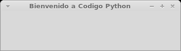
root = Tk()
root.title("Bienvenido a Codigo Python")
otra_ventana = Toplevel(root)
root.mainloop()
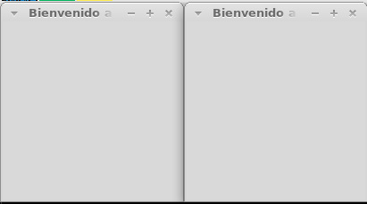
root = Tk()
root.title("Bienvenido a")
otra_ventana = Toplevel(root)
otra_ventana.title("Codigo Python")
root.mainloop()
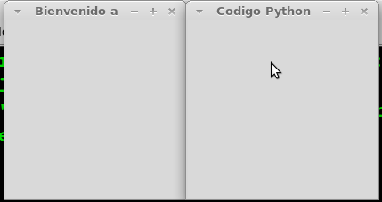
Establece los valores maximos de la medida de la ventana, tanto su ancho como su alto.
Ejemplo:
root.geometry("300x300")
root.maxsize(width=400, height=400)
Establece los valores minimos de la medida de la ventana, tanto su ancho como su alto.
Ejemplo:
root.geometry("300x300")
root.minsize(width=200, height=200)
Podemos cambiar el estado en el que se encuentra la ventana a 'normal', 'iconic' o 'withdraw'. Con la opcion 'normal' la ventana se comporta normalmente apareciendo en la ventana, con la opcion 'iconic' obtenemos los mismos resultados que el metodo 'iconify()' minimizando la ventana y por ultimo con 'withdraw' obtendremos como se imaginaran el mismo resultado que con 'withdraw' ocultando la ventana. La forma en que se declaran son las siguientes:
root.state(newstate="normal") root.state(newstate="withdraw") root.state(newstate="iconic")
Veamos un ejemplo de su uso y funcionamiento:
from Tkinter import *
import time
def funcion():
root.state(newstate='withdraw')
time.sleep(5)
root.state(newstate='normal')
root = Tk()
boton = Button(root, text="Probando el metodo state", command=funcion)
boton.pack()
root.mainloop()
Nos permite indicar que si la ventana debe o no poder redimensionarse ya sea en su ancho o el su alto, dandole a sus parametros 'width'(Ancho) y 'height' (Largo) los valores 'True' o 'False'. Con True habilitamos el redimencionamiento y con False los deshabilitamos. Si estamos usando a su ves los metodos 'minsize' y/o 'maxsize' el valor maximo al cual se pueda redimencionar dependera de estos dos metodos en caso de existir.
root.resizable(width=True, height=False)
root.resizable(width=False, height=True)
root.resizable(width=False, height=False)
Este metodo es uno, junto con el resto (no hay que desmerecerer la funcion de ninguno :) ), muy importante ya que nos permitira indicar tanto el tamaño de la ventana como su posicion, esto nos permitira trabajar con varias ventanas de una forma mas prolija y agradable para el usuario si se planifican bien los objetivos y se utilizan las herrramientas adecuadas en este caso hablaremos de 'geometry'.
Para su utilizacion tenemos dos posibilidades una es indicar solo el tamaño de la ventana usando la siguiente forma
root.geometry("WxH")
o indicando ademas del tamaño de la ventana la posicion de la misma de la siguiente forma
root.geometry("WxH±X±Y")
Resumiendo la cadena que toma este metodo tiene esta forma:
wxh±x±y
Donde las letras tienen este significado:
El ancho y el alto deben ser reemplazados por las letras W y H respectivamente, separadas por una letra 'x' y su valor debera ser en pixeles, seguido de estos dos pueden ir de manera opcional dos valores mas que indicaran la posicion de la ventana en la pantalla donde se debera indicar estos valores, tambien en pixeles, para el eje x y el eje y. Una observacion que se debe hacer es que los valores que tome tanto el ancho como el alto de la ventana ademas de ser unicamente en pixeles deberan de ser numeros enteros positivos.
El significado del signo mas y menos indica que si se le pasa un valor positivo este sera contado desde la esquina superior izquierda de la pantalla en cambio si le pasamos un valor negativo este sera tomado en cuenta partiendo como origen desde la esquina inferior derecha; este es un detalle que hay que tener muy en cuenta cuando deseamos posicionar una ventana.
Un ejemplo de esto es el siguiente
#!/usr/bin/env python
from Tkinter import *
# Primer ventana con valores positivos
primer_ventana = Tk()
primer_ventana.geometry("300x300+0+0")
# A modo estetico le di un titulo
primer_ventana.title("Posicion x=+0 y=+0")
# Este tambien es estetico y no influye en el uso del metodo
etiqueta = Label(primer_ventana, text="Posicion x=+0 y=+0", width=100, height=100, anchor=CENTER)
etiqueta.pack()
primer_ventana.mainloop()
# Segunda ventana con valores negativos
segunda_ventana = Tk()
segunda_ventana.geometry("300x300-0-0")
segunda_ventana.title("Posicion x=-0 y=-0")
etiqueta = Label(segunda_ventana, text="Posicion x=-0 y=-0", width=100, height=100, anchor=CENTER)
etiqueta.pack()
segunda_ventana.mainloop()
Como se observa se crean dos ventanas donde a una se le pasa valores positivos y a la otra por el contrario sus valores seran negativos.
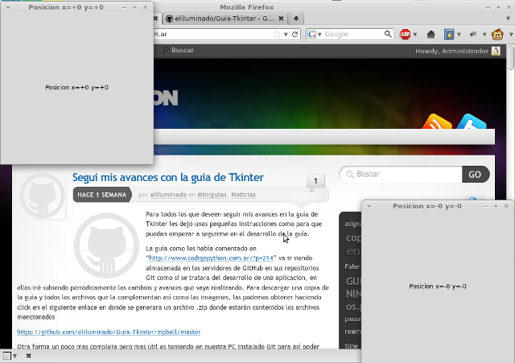
Este metodo permite ocultar una ventana; la forma que podemos usar para restaurarla es con 'deiconify()' o 'iconify()', o a traves del metodo 'state' que nos puede resultar mas comodo de usar. No se requiere de ningun argumento para funcionar como sucede tanto con 'deiconify' e 'iconify'.
root.withdraw()
Un ejemplo para ver como funciona es el siguiente:
#!/usr/bin/env python
from Tkinter import *
import time
def funcion():
root.withdraw()
time.sleep(5)
root.deiconify()
root = Tk()
boton = Button(root, text="Probando el metodo state", command=funcion)
boton.pack()
root.mainloop()
Todos los widgets de Tkinter tienen acceso a metodos especificos para la gestion de la geometria, que tienen como proposito ordenar y organizar dichos widgets en el area donde estan contenidos.
Para conseguir esto tenemos tres gestores para la geometria, aunque muchos recomiendan solamente usar solo uno de ellos, esperamos que luego de leer acerca de estos tres seas capaz de elegir el que mas se adapte a tus necesidades y a tu forma de trabajar.
.
.
.
Aquí veremos a 'Frame' no solo como un widget mas sino como una forma de ordenar el diseño de nuestra aplicación
Todos los widgets estandar de Tkinter proporcionan un conjunto basico de opciones para poder personalizarlos, que nos permiten modificar sus colores, fuentes, bordes y tamaños entre otros. La mayoria de ellos permite especificar un color de fondo y de primer plano que nos seran muy utiles cuando intentemos darle un aspecto mas pulida a nuestra aplicacion.
Para especificar dichos colores tenemos dos formas una es utilizar el nombre del color o especificar la proporcion de rojo, verde y azul que componen a dicho color en digitos hexadecimales que es la mas popular y la mas precisa a la hora de trabajar.
Como se habia mencionado se puede especificar un color con solo usar su nombre en ingles, por ejemplo para el color balco usariamos la palabra 'white' y para el color rojo 'red', aunque Tkinter no nos limita a usar solamente los colores basicos sino que nos ofrece una paleta bastante amplia de colores.
Les dejo dos ejemplos para que puedan observarlo en funcionamiento:
boton = Button(root, text="Que te parece la guia?", command=funcion, background="red")

boton = Button(root, text="Que te parece la guia?", command=funcion, background="CadetBlue")
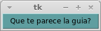
Otra de las posibilidades que tenemos es utilizar los colores del sistema para conseguir un aspecto mas acorde a la plataforma con que estemos trabajando.
Podemos obtener una lista de los posibles colores que nos da Tkinter en la siguiente pagina: [http://www.tcl.tk/man/tcl8.5/TkCmd/colors.htm]
Aunque este metodo sea un poco mas complicado en su uso es el mas preciso que el metodo que habiamos mencionado arriba, la forma en que se utiliza es la siguiente:
#RRGGBB
Donde RR, GG y BB son representaciones hexadecimales de los colores rojo, verde y azul, respectivamente. Para formar un color debemos en primer lugar elegir la intensidad que deseamos usar, especificando la cantidad de rojo, verde y azul en una escala del 0 al 255.
Usando la siguiente linea desde la consola de Python podemos crear nuestros colores para Tkinter reemplazando los valores de la tupla por los que deseamos utilizar:
color_rgb = "#%02x%02x%02x" % (0, 100, 0)
Su uso es muy simple, solo debemos usar la forma que habiamos visto cuando coloreamos usando los nombres pero ahora deberemos reemplazar el nombre del color por su equivalente en el valor RBG Hexadecimal como en el siguiente ejemplo:
boton = Button(root, text="Que te parece la guia?", command=funcion, background="#FA0000")
Donde "#FA0000" es el equivalente a utilizar la cadena 'red' para indicar el nombre del color.
En Tkinter podemos especificar las medidas de los elementos no solo en píxeles sino que también podemos especificar los valores en centímetros, pulgadas, milímetros y puntos para esto debemos pasar el valor como cadena que se compone de un numero entero o no seguido de una letra que indique el tipo de unidad a utilizar que se especifica en la siguiente tabla:
| Símbolo | Descripción | |
|---|---|---|
| c | Centímetros | |
| i | Pulgadas | |
| m | Milímetros | |
| p | Puntos de impresora (alrededor de 0.35mm) | |
Si el valor que se pasa es un numero entero este es considerado como un valor en píxeles
Ejemplos:
boton = Button(root, text="Hola Mundo!!!", borderwidth=10)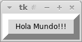
boton = Button(root, text="Hola Mundo!!!", borderwidth='1c')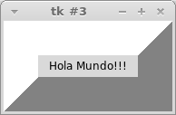
boton = Button(root, text="Hola Mundo!!!", borderwidth='0.5i')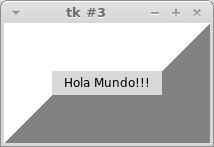
boton = Button(root, text="Hola Mundo!!!", borderwidth='10m')

boton = Button(root, text="Hola Mundo!!!", borderwidth='10p')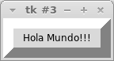
Entorno grafico en Python http://www.codigopython.com.ar/miniguias/entorno-grafico-en-python]
Interfaces gráficas de usuario en Python
[Curso de Python con Interfaces graficas TK http://foro.elhacker.net/scripting/python_curso_de_python_con_interfaces_gráficas_tk-t232514.0.html]
Tkinter 8.4 reference: a GUI for Python
Esta obra está licenciada bajo una Licencia Attribution-ShareAlike 3.0 Unported de Creative Commons. Para ver una copia de esta licencia, visite http://creativecommons.org/licenses/by-sa/3.0/ o envíenos una carta a Creative Commons, 171 Second Street, Suite 300, San Francisco, California, 94105, USA.